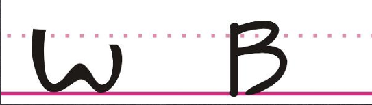
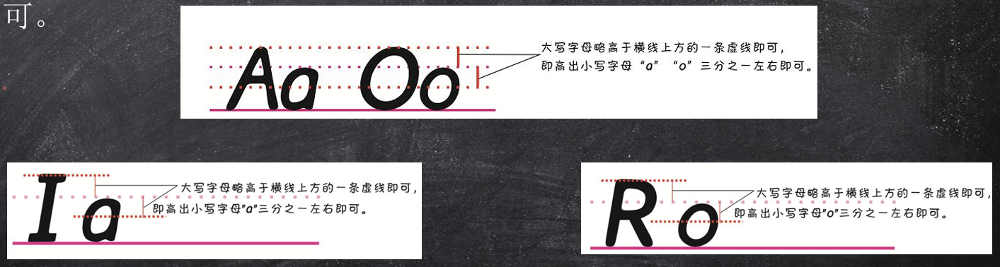
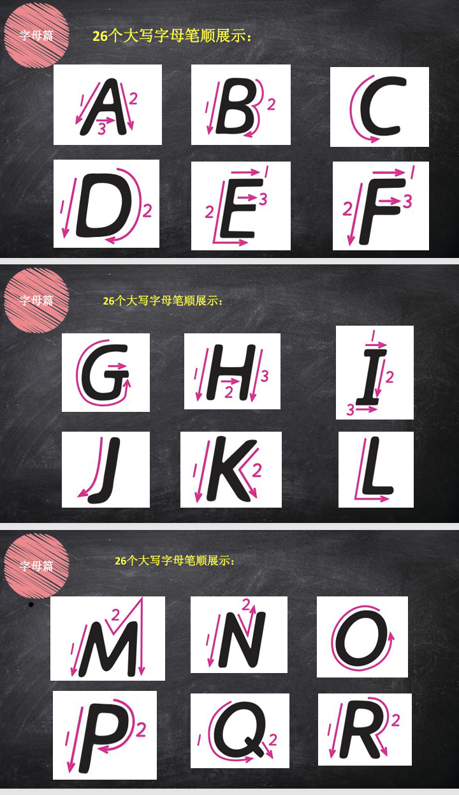
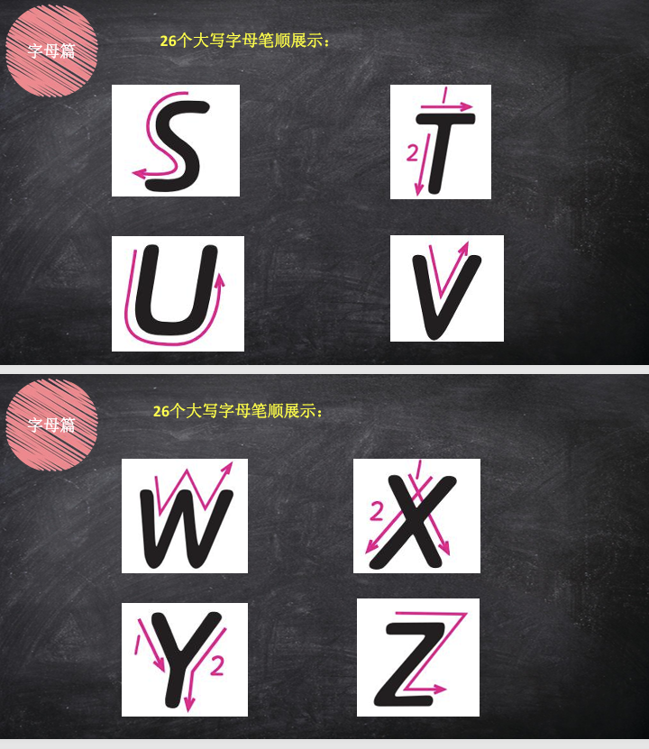
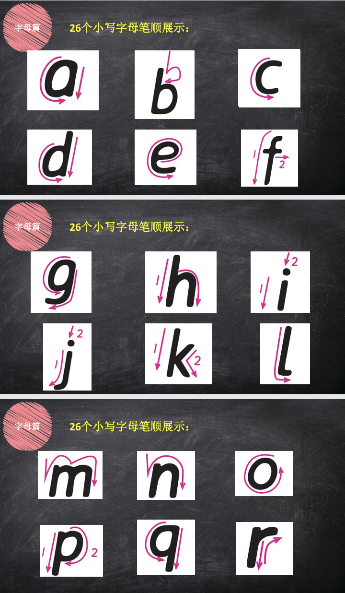
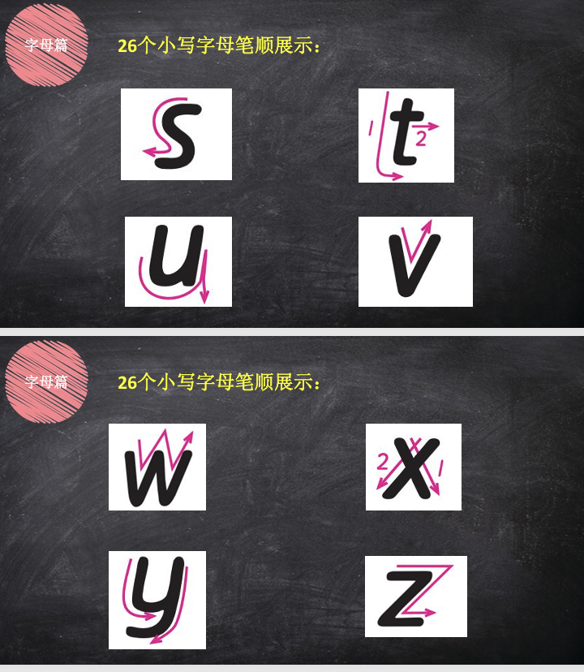

衡水体的本质，是一场针对考试阅卷场景的“字体工程学”优化。它牺牲了书写的个性与速度，换来了卷面视觉噪音的最小化。它的美学不是艺术之美，而是一种极致的秩序之美、功能之美。衡水体有5大核心特点，如下所示：
1、极致的无衬线形态：零装饰、零连笔
这是衡水体最直观的特征。它完全舍弃了英文书法的装饰性，没有传统手写体的连笔，也没有字母起笔收笔的“小尾巴”。每个字母都像键盘敲出来的无衬线印刷体（如Arial），高度简化到只剩核心骨架，目的就是让字形干净利落，彻底消除潦草的隐患。
2、呆板的几何化结构：追求“圆”和“满”
衡水体把每个字母都高度几何化了。圆润是核心，像“a、c、o”这类字母要求写出饱满的正圆或椭圆，不能发瘪。同时，像“b、d、h、l”等字母的竖笔要直，“g、j、y”的尾部弧度要柔和。这种严格的几何规范，保证了每个单字的形状都稳定、清晰。
3、严格的“四线三格”定位：追求统一的重心
这是达到“印刷感”最核心的技术要求。每个字母都必须严格压线，特别是字母的主体部分要占满中间格。比如“a、c、e”要上下顶格，“b、d”的上部竖笔要顶到顶格。这种对格线纪律的极致遵守，让所有字母仿佛被一条无形的重心线串起，整齐得像列队的士兵。
4、均匀的“呼吸感”间距：词间能放一个“o”
卷面显得“糊”主要是因为间距失调。衡水体规范了两种间距：字母间距要紧凑但绝不粘连；词间距则有明确标准，通常要求能放下一个小写字母“o”。这个视觉化标准很容易练习，能保证行文通透、有“呼吸感”，大量文字排在一起也不会显得拥挤。
5、克制的倾斜度：垂直或微微前倾
传统手写体提倡大幅右斜以求流畅，而衡水体为了清晰，要求字母的竖笔近乎垂直，或整体保持极小的、统一的5度左右前倾。这能避免因倾斜角度不一而产生的杂乱感，让整体卷面显得更庄重、冷静，符合考试场景。
1、在最开始的练习中，不必先练习特别的字母，可以先练习直线和圆 的写法，大部分英文字母都是由这二者组成，因此写好英文之前，应先 保证直线横平竖直，圆圆润无缺陷。
2、字母斜度，即字母与一线格的夹角，规范书写下的字母与线之间的夹角为75-85度。

3、写一个字母，从起笔到收笔，握笔均要用力，避免手抖，尤其是收 笔时，不要因为该字母即将写完就提早放松，导致前功尽弃。记住：下笔 要准（定好位置），运笔要稳（认真书写），收笔要忍（别太心急）。

4、大写字母略高于横线上方的一条虚线即可，即高出小写字母"a"或“o”三分之一左右即可。




